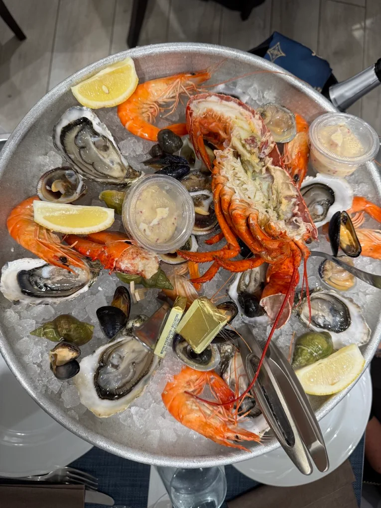
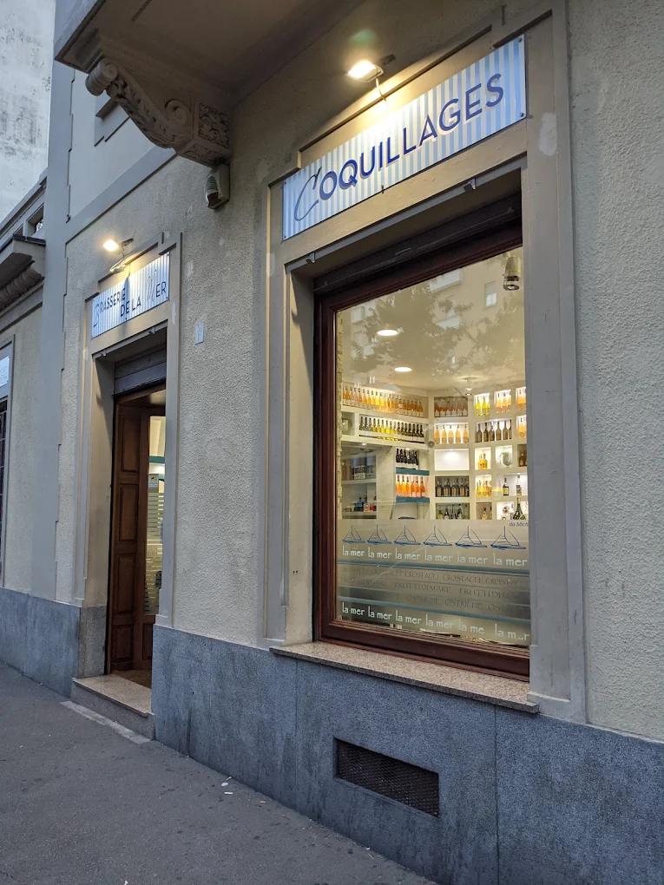
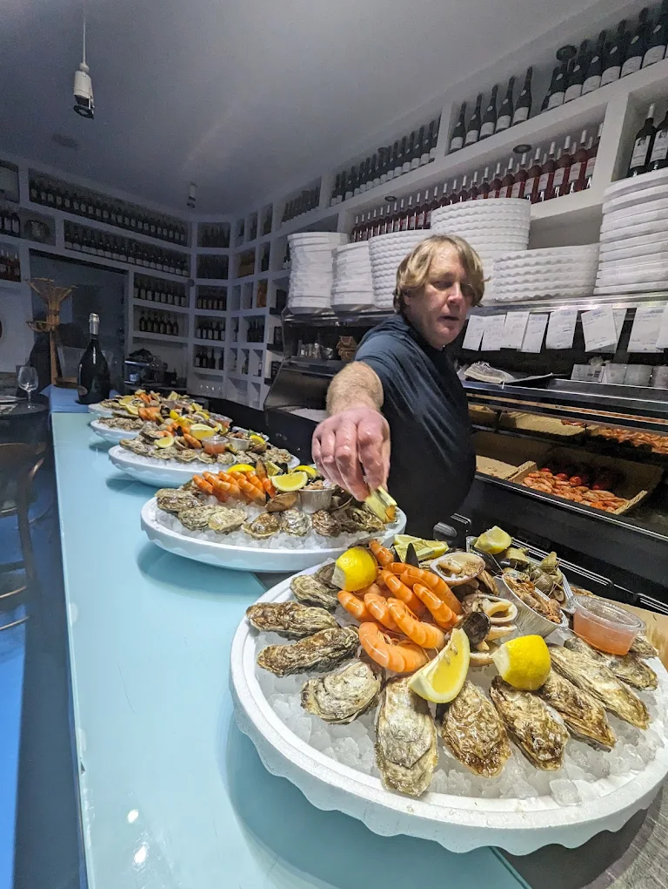

Gallery
The Simini Experience



Brasserie de la mer · Turin
Brittany in Turin —
the finest raw seafood in the city
4.6/5 Google · Corso Racconigi 30
Belon and Fine Claire oysters personally selected by Michel, fresh daily from France
The signature dish: lobster, langoustine, crab, scampi, prawns, clams, razor clams
Chablis, Sancerre, Muscadet and Champagne — the perfect pairing for raw seafood

Michel, a true Breton, personally selects the finest oysters directly from Brittany. A small, elegant restaurant dressed in French marinière style — all white and blue, with portholes instead of windows. Perfect for romantic dinners and special occasions.
«Our go-to spot whenever we crave oysters and coquillages without having to travel all the way to France.» — Google
Our story

The best Plateau Royal in Turin. Only the freshest ingredients.
A truly special place, a must for seafood lovers. Already planning to return.
Fabulous oysters, excellent Champagne. Staff fast and precise.
Corso Racconigi 30
10139 Turin, Italy
Mon–Sat: 5:00 pm – 11:30 pm
Sun: Closed
Reservation recommended — limited seating